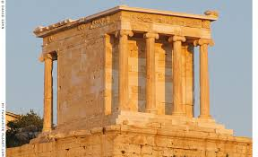

The Temple of Athena Nike
Description: The Temple of Athena Nike is a small yet elegant temple located on the Acropolis of Athens, dedicated to Athena Nike, the goddess of victory.
History: Constructed between 427 and 424 BC, the temple was built to commemorate the Greek victories over the Persians. It is an example of Ionic architecture and is notable for its sculptural decoration, including reliefs that depict historical battles and religious ceremonies.
The temple's compact size and decorative sculptures make it a significant example of classical Greek temple design and a symbol of Athenian success in warfare.